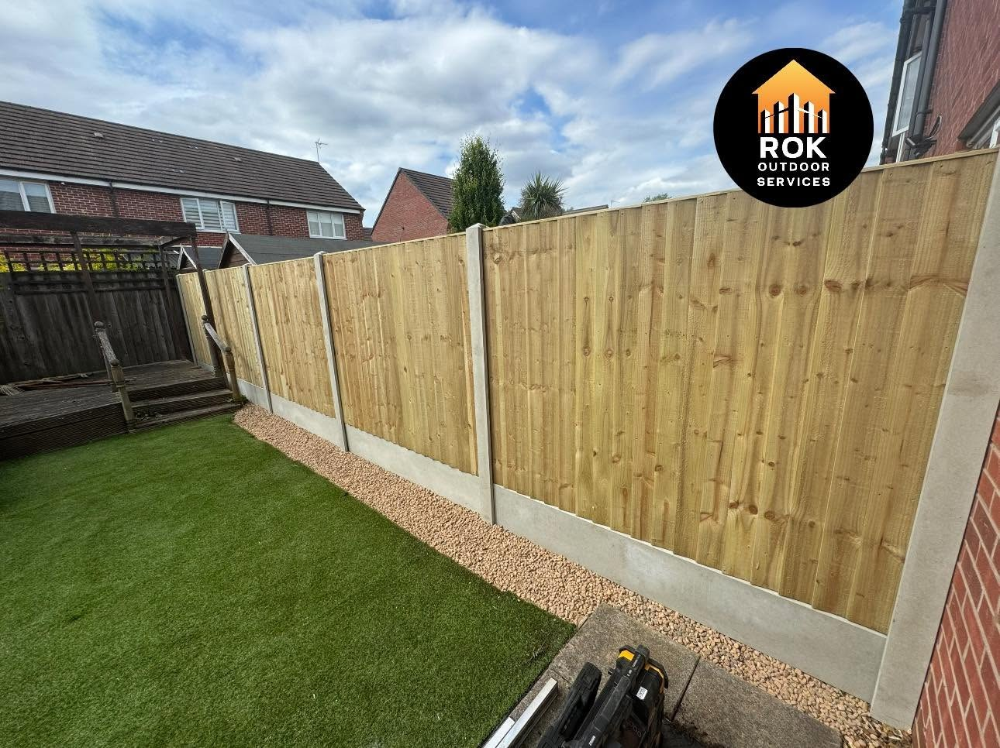
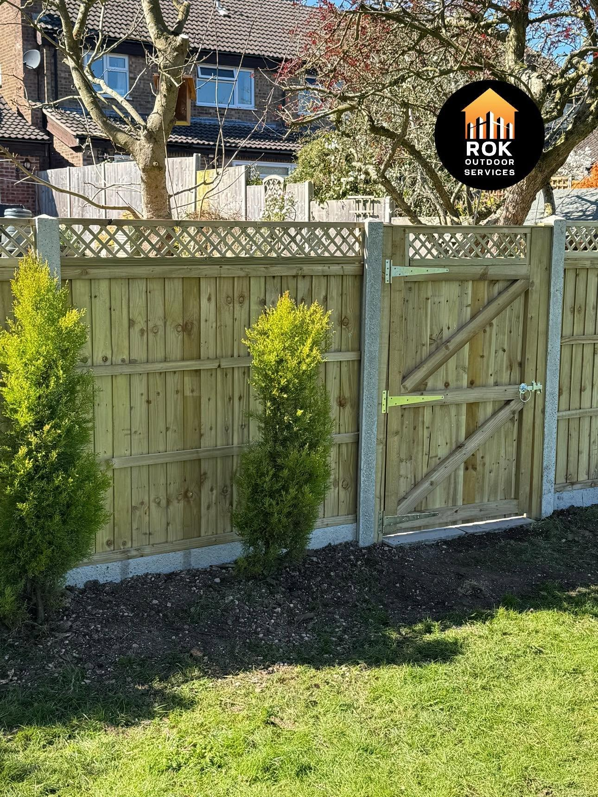
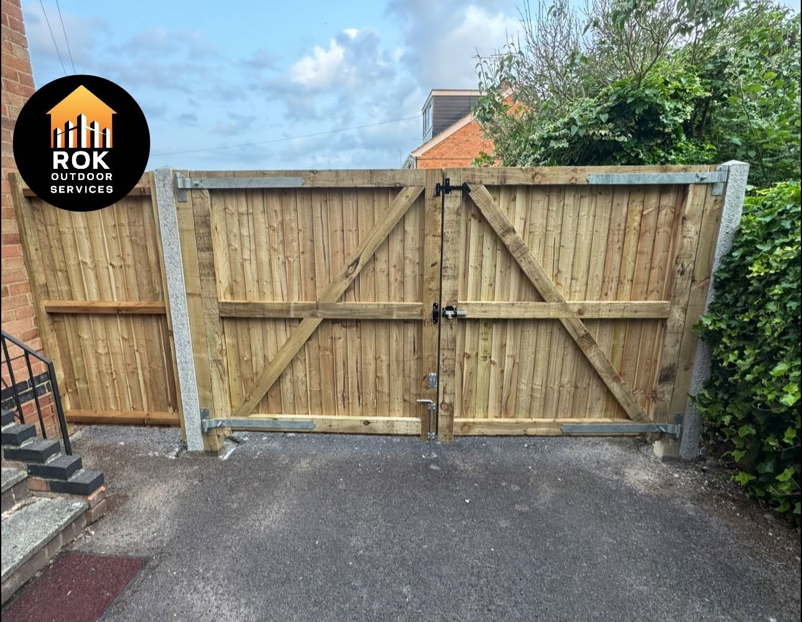
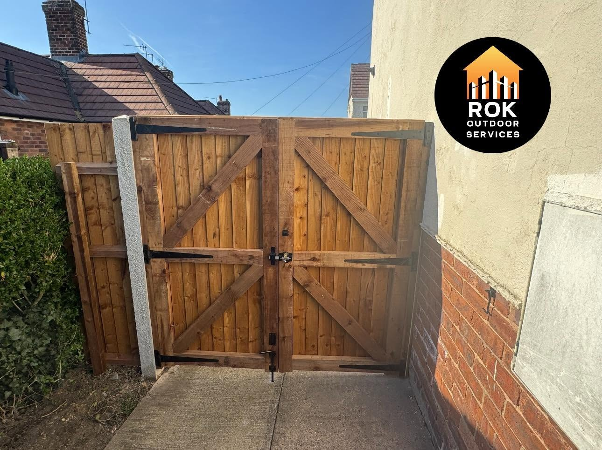
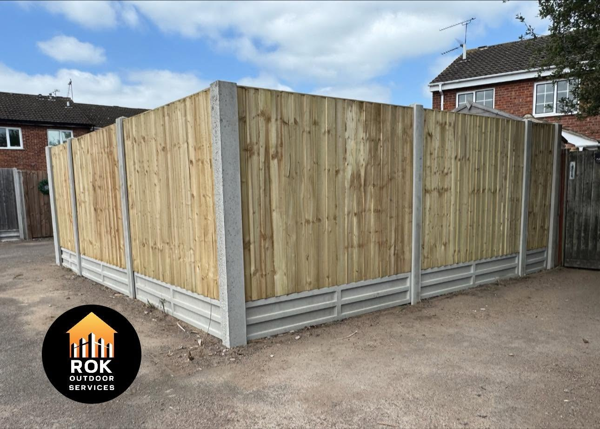
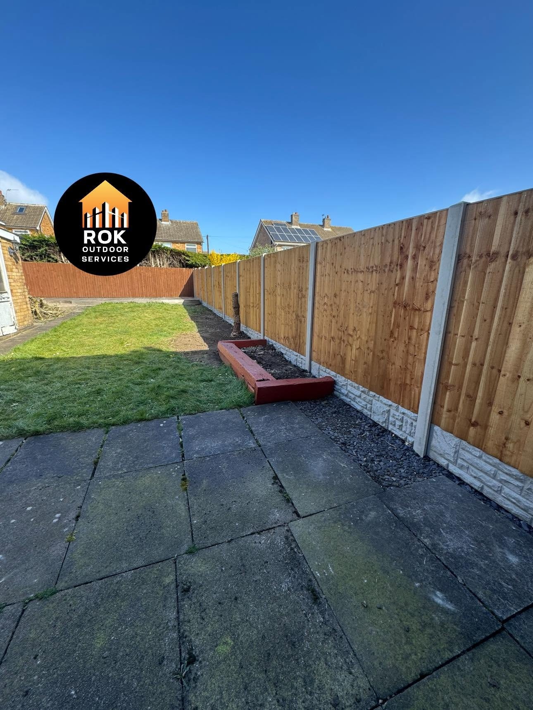
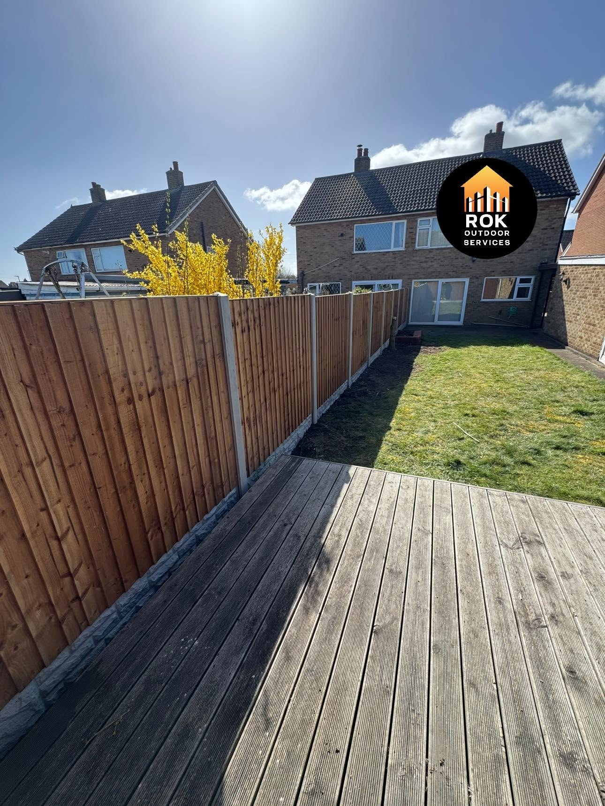
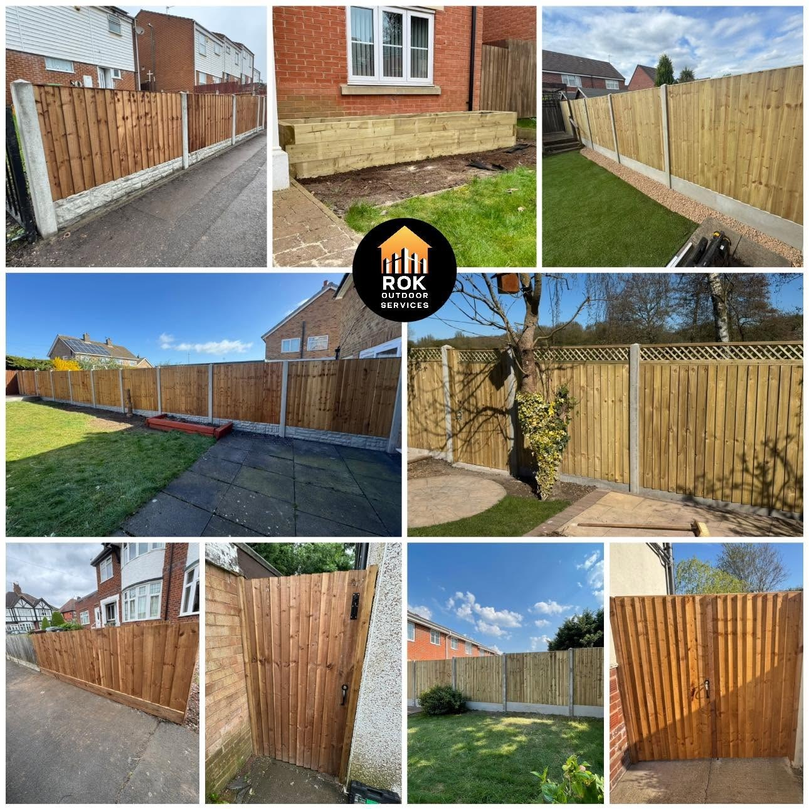
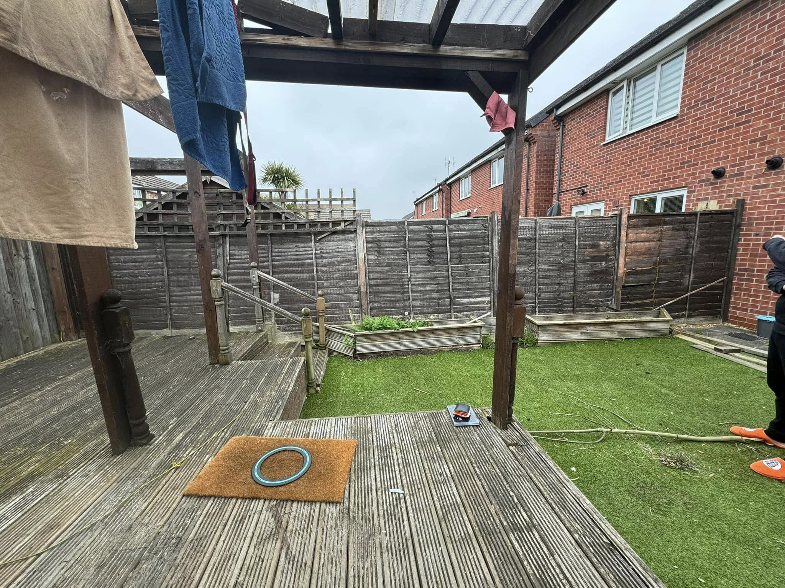
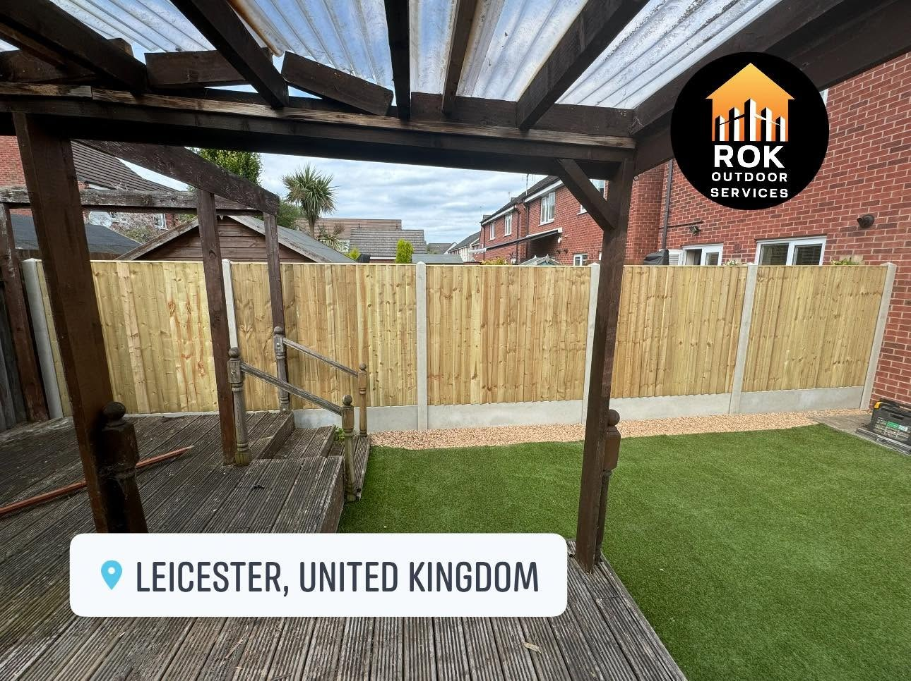

ROK FENCING & GATES · EAST LEAKE
Privacy. Security.
A better boundary.
Timber fencing and bespoke gates built around your outdoor space. Honest, reliable and fully insured.
Fencing & Bespoke Gates in East Leake
Your garden.
Beautifully defined.
ROK Fencing & Gates provides fencing solutions designed around privacy, security and the look of your outdoor space. Based in East Leake, the business undertakes timber fencing, gates and fence replacements. Explore real projects and get in touch to discuss your plans.
Request a quote →

Garden fencing & Bespoke gates
A gate that fits the way you live.
A garden entrance, a side passage or a wider opening. Our bespoke timber gates bring the practical details and the finished look together.
Discuss your project →

RECENT WORK
See the finished work.
A closer look at projects and work in progress.



MORE FROM ROK
Fencing for different spaces.
Explore more completed boundaries and gates from the project collection.

AN OLD BOUNDARY. A FRESH FINISH.
From tired fence
to finished garden.
The same garden beside the pergola, before and after its fence replacement.
Discuss your replacement →

East Leake
Honest work.
A reliable finish.
ROK Fencing & Gates is based in East Leake, providing fencing solutions for privacy, security and outdoor spaces. The business is fully insured, with real fencing and gate projects shown throughout this website.
Discuss your fencing or gate project directly with the business.
Timber boundaries and bespoke gates for your particular space.
Call, email or send your project details and photos on WhatsApp.
GOOD TO KNOW
Your questions answered.
Where is ROK Fencing based?
ROK Fencing is based in East Leake. Send your postcode with your enquiry so we can confirm coverage for your property.
Are you fully insured?
Yes. ROK Fencing describes the business as fully insured.
Can I send photos of my current fence?
Yes. Use the WhatsApp enquiry form, then attach photos of your existing fence, access and boundaries before sending.
REQUEST A QUOTE
Tell us what you have in mind.
Send the details of your project and its location. WhatsApp opens with your enquiry ready to send, where you can also attach photos.
ROK Fencing & Gates
Ready to discuss your project?
East Leake